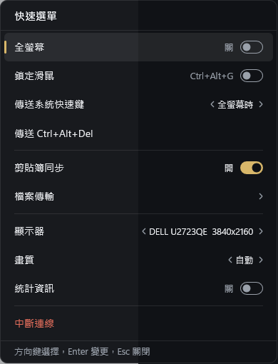
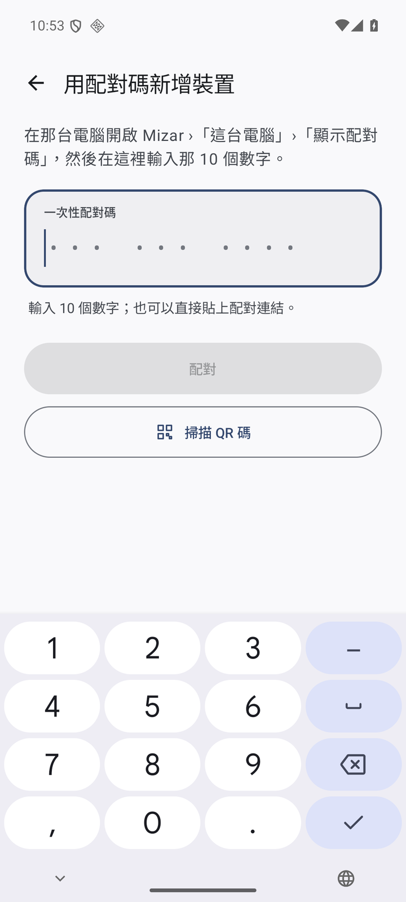
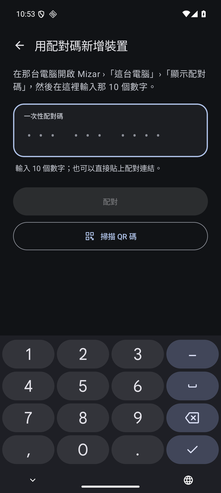

它能做什麼
Windows 和 Android，同一套軟體。
電腦對電腦
坐在這台電腦前，用的是另一台。
畫面、聲音、鍵盤、滑鼠，順到可以玩遊戲。需要的話，連登入畫面也行。
- 螢幕大小跟著你眼前這一台
- 你工作時，另一邊的螢幕保持全黑
- 複製貼上、傳檔案，雙向都通
目前從 Windows 電腦遙控；Android 版還在測試。

手機
手機，搬到桌上。
Android 的 App 和遊戲放進視窗裡，鍵盤滑鼠替你的拇指上場。
- 為遊戲設計的鍵位編輯器
- 手機自己的螢幕可以保持全黑
- 走你自己的 Wi-Fi 或熱點
任何地方
出了門，還是一點就到。
開啟一次就好。之後你的裝置會自己找到電腦，直接連上。
- 十個數字，配對遠方的裝置
- 你沒開，它就不對外
- 連不上的時候，會告訴你為什麼


隱私
從這台直達那台，中間什麼都沒有。
不用帳號，也沒有 Mizar 的伺服器。你看到的、你做的，只在你的兩台裝置之間。
- 你沒允許，誰也連不進來
- 沒有流量分析，沒有廣告
- 解除安裝，不留痕跡
畫面取自開發版，內容為示範資料。